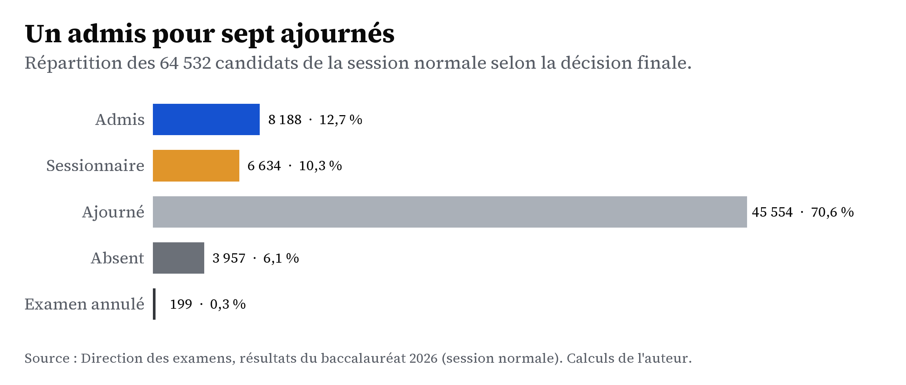
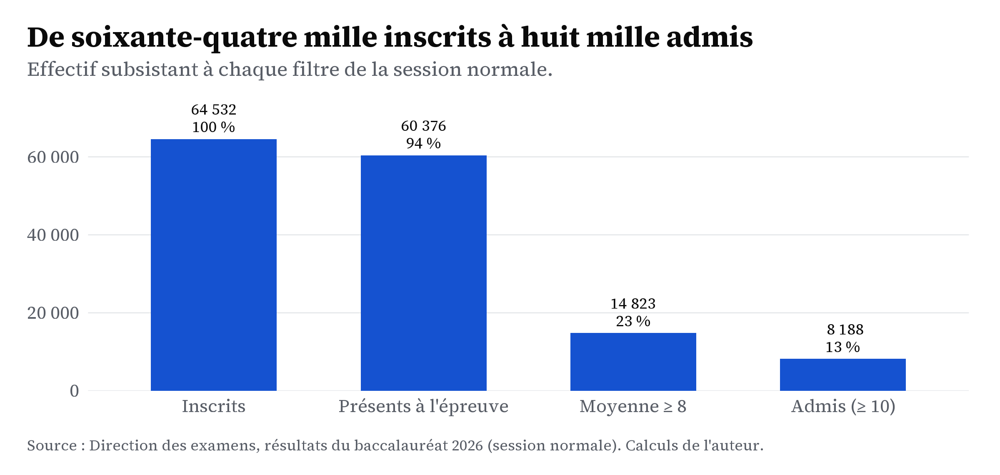
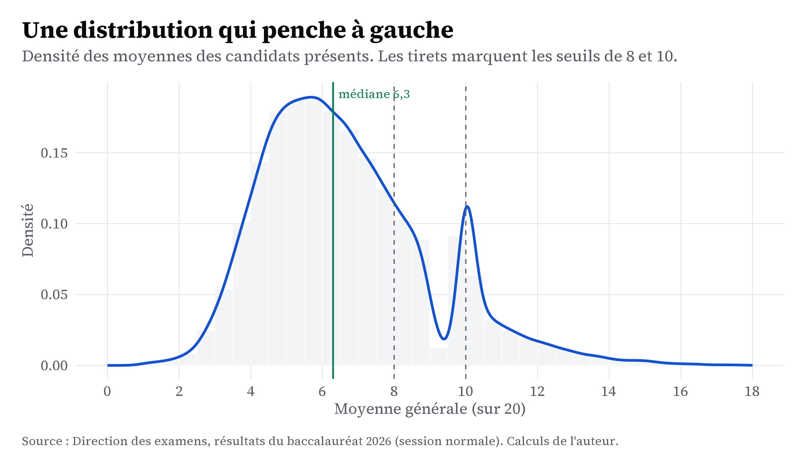
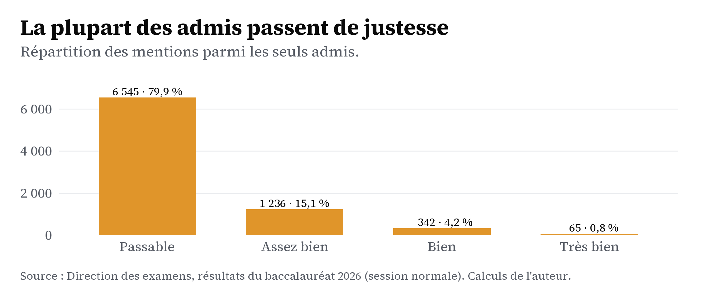

Panorama d’une session
Avant de regarder les résultats par région ou par filière, commençons par l’ensemble. Que deviennent les soixante-quatre mille candidats ?
On peut voir l’examen comme une série de filtres. Au départ, tous les inscrits. Ensuite, il faut être présent, puis dépasser le seuil de la session complémentaire, et enfin celui de l’admission. À chaque étape, une partie des candidats est écartée. Suivre ces étapes une à une montre déjà à quel point l’examen est sélectif.
Les quatre issues d’une candidature
Le résultat tient en quelques catégories. Un candidat peut être admis, ajourné, renvoyé à la session complémentaire comme sessionnaire, ou absent. Quelques dossiers sont annulés, le plus souvent à cause d’un téléphone trouvé en salle.
Le déséquilibre est net. Les ajournés sont de loin les plus nombreux : à eux seuls, ils représentent plus des deux tiers des candidats. Les admis et les sessionnaires forment deux groupes bien plus petits. Les absents, eux, montrent qu’environ un candidat sur seize ne se présente pas à l’épreuve.
Les étapes, une à une
Reprenons les mêmes candidats, mais étape par étape. On part de tous les inscrits. On retire les absents pour garder les présents. On garde ensuite ceux qui dépassent le seuil de 8, puis ceux qui atteignent l’admission.

Le résultat est parlant. Presque tous les candidats se présentent. C’est le seuil de 8 qui écarte le plus grand nombre, puis celui de l’admission. Autrement dit, la difficulté du baccalauréat ne vient pas de l’absentéisme, mais du niveau demandé le jour de l’épreuve.
La forme des notes
Derrière les catégories, il y a les notes elles-mêmes. Le graphique ci-dessous montre la répartition des moyennes. La courbe a un seul sommet, situé assez bas, et s’étire faiblement vers la droite au-delà de 10.

La médiane des présents est d’environ 6,3 : la moitié des candidats n’atteignent même pas ce niveau. La part de la courbe située au-delà de 10 est très petite. C’est exactement ce que traduit le faible taux d’admission.
Les mentions
La mention ne figure pas dans les données : le fichier ne donne que la moyenne et la décision. Nous la reconstruisons donc à partir de la moyenne, en utilisant les seuils habituels du baccalauréat, et uniquement pour les candidats admis.
Les seuils des mentions Pour un candidat admis, la mention est définie à partir de sa moyenne sur 20 :
- Passable : de 10 à moins de 12
- Assez bien : de 12 à moins de 14
- Bien : de 14 à moins de 16
- Très bien : 16 et plus
La plupart des admis obtiennent la mention « passable », avec une moyenne entre 10 et 12. Les mentions plus élevées sont de plus en plus rares, et la mention « très bien » ne concerne qu’un très petit nombre de candidats.

Ce graphique complète le tableau. Obtenir le baccalauréat en 2026 est déjà rare ; l’obtenir avec une bonne mention l’est encore plus. Les pages suivantes cherchent à comprendre qui réussit, et ce que changent la région, la filière et le parcours de chaque candidat.